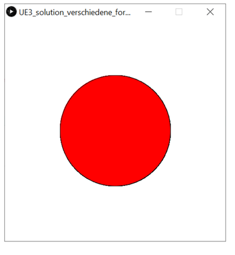
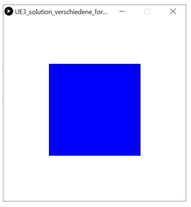

Dein Programm soll bestimmte Formen zeichnen, wenn bestimmte Tasten gedrückt werden.
Starte mit folgender Grundstruktur:
void setup() {
size(400, 400);
background(255);
}
void draw() {
// Dein Code
}
Dein Programm soll Folgendes ausführen:
1. Wenn die Taste r gedrückt ist, dann zeichne einen roten Kreis

2. Wenn die Taste b gedrückt ist, dann zeichne ein blaues Quadrat.

4. Wenn die Taste x gedrückt ist, dann lösche alle bisherigen Formen (Befehl background).
In dieser Aufgabe soll ein Zeichenprogramm mit verschiedenen Farben erstellt werden. Starte wieder mit folgender Grundstruktur:
void setup() {
size(400, 400);
background(255);
}
void draw() {
// Dein Code
}
1. Zeichne Kreise mit Durchmesser 15, die dem Mauszeiger
folgen.
2. Lass die Kreise nur noch dann zeichnen, wenn die Maustaste
gedrückt ist.
3. Entferne mit noStroke(); die schwarze Umrandung
der Kreise.
4. Ändere die Farbe der Kreise, wenn die entsprechende Taste
gedrückt wird:
5. Wenn die Taste x gedrückt ist, dann lösche alle bisherigen
Formen.
6. Ergänze eine zusätzliche Farbe.
Erweitere dein Zeichenprogramm.
Hinweis: Du kannst innerhalb einer if-Anweisung weitere if-Anweisungen verwenden. Das nennt man verschachtelte if-Anweisungen.
Ändere dein Programm aus Aufgabe 3.11:
Ändere dein Programm aus Aufgabe 3.12 weiter:
Alles, was links mit Kreisen gezeichnet wird, soll auch rechts gespiegelt mit Quadraten erscheinen und umgekehrt.
Tipp: Arbeite mit mouseX und überlege, wie du die
x-Position spiegeln kannst. Die Größe des Fensters ist dir bekannt.
Ändere dein Programm aus Aufgabe 3.13: